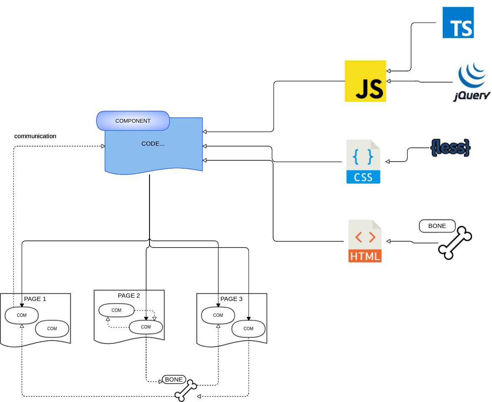

Componentes Skeleton
Descripción
Los componentes son trozos de codigo independientes que generan un objeto html con características singulares. Son objetos encapsulados con una estructura HTML , un diseño CSS, y un comportamiento con JS. Ayudan a crear aplicaciones más fáciles de diseñar y mantener. Son fácilmente reutilizables, minimizan y homogenizan todo muestro código.
Para un mayor dinamismo cuenta con distintas tecnologías para darle mayor funcionalidad:

Component
La forma de crearlo es en un archivo con el nombre del componente que se desea.
Se debe iniciar y acabar con el pseudo-tag component <code><component id="">Codigo...</component></code>.
Dentro de el incluiremos la estructura html, js y css si se desea, y será precompilada con las directivas Bone.
Podemos encapsularle unos estilos propios mediante el tag <code><style lang="" scoped><style></code> con el atributo lang se declarará el sublenguaje que se esté empleando: Lesscss, Sass etc..
Para añadir la funcionalidad al componente se declara la etiqueta <script scope><script>
Los atributos que se le pasan al componente a su llamada se declaran como variables Bone.
Ejemplo botón
Ejemplo de un componente botón:
<m-btn onclick="alert(`Hay que poner estas comillas para que lo reconozca`)"></m-btn>
src/mycomponents/m-btn.phtml
<component id="--id">
<button type = "submit" id="--id_el" class="$$class collapse tertiary" placeholder=" "
name = "$$name" tile = "$$tile"
value = "$$value" tabindex = "$$tabindex" onfocus = "$$onfocus" onblur = "$$onblur" onclick = "$$onclick"
onkeypress = "$$onkeypress" onkeydown = "$$onkeydown" onkeyup = "$$onkeyup"
onchange = "$$onchange" $$require $$disabled $$readonly $$checked
>
@if ($$spinner) <i class="spinner hidden"></i> @endif
@if ($$icon) <i class="lnr lnr-$$icon"></i> @endif
@if ($$caption)
<span class="caption">$$caption</span>
@else
<span class="caption">Aceptar</span>
@endif
</button>
</component>
Procesado de la salida al archivo .php:
<?php $c = new \core\Component('m-btn-success', '[]', ''); $c->print();?>
Resultado html:
<button type="submit" id="tag619cca9846628_el" class=" collapse tertiary" placeholder=" ">
<span class="caption">Aceptar</span>
</button>
La forma de crearlo es en un archivo con el nombre del componente que se desea. <br>
Se debe iniciar y acabar con el pseudo-tag component <code><component id="">Codigo...</component></code>. <br>
Dentro de el incluiremos la estructura html, js y css si se desea, y será precompilada con las directivas Bone. <br>
Podemos encapsularle unos estilos propios mediante el tag <code><style lang="" scoped><style></code> con el atributo lang se declarará el sublenguaje que se esté empleando: Lesscss, Sass etc.. <br>
Para añadir la funcionalidad al componente se declara la etiqueta <script scope><script> <br>
Los atributos que se le pasan al componente a su llamada se declaran como variables Bone.